خرد
و/یا
جنون
جمعی
جمعی
سازنده:
nicky case
• مترجم: پویان نیّری
original game in English
original game in English
سر آیزاک نیوتن خودش رو کاملا یه فرد
باهوش میدونست. منظورم اینه که اون بعد از
اینکه حساب دیفرانسیل و نظریه گرانش رو اختراع کرد،
حتـما به انـدازه کافـی باهـوش بوده کـه یه سرمایـهگذاری
اقتـصادی انجام بـده، نـه؟ به هر حـال سرتـونو درد نیـارم،
اون توی آشفتگی سراسری بورس معروف به
«حباب دریای جنوب سال ۱۷۲۰»،
۴,۶۰۰,۰۰۰ دلار (به پول امروز) ضرر کرد. همونطور که
آقای نیوتن بعدا گفت:
«من میتوانم حرکت اجسام آسمانی را محاسبه کنم،
ولی از محاسبهی حماقت مردم عاجزم.»
بازارها، موسسات یا کل دموکراسیها
از کنترل خارج شدن— جنون جمعی. با این وجود،
درست موقعی که از بشریت ناامید میشی، مردمی رو
میبینی که توی زلزلهها به همدیگه کمک میکنن، جوامعی
که برای مشکلات راه حل درست میکنن، مردمی که برای ساختن
دنیای بهتر میجنگن— خرد جمعی! اما چرا بعضی از جوامع رفتار جنونآمیز یا خردمندانه نشون میدن؟
هیچ نظریهای نیست که بتونه همه چیز رو توضیح بده، اما فکر
میکنم یک زمینهی مطالعاتی جدید به نام علم شبکه ،
میتونه به ما کمک کنه! ایدهی کلیدی این علم
اینه: برای شناخت جوامع، ما نباید
به تک تک افراد جامعه بپردازیم.
بلکه باید به...
نکات اضافی
اختیاری
↑
↓
لینکها و مراجع
برای مثال، یک تحقیق در سال ۱۹۹۱ نشون داد که "تمام دانشجویان عنوان کردن که دوستاشون بیشتر از خودشون مشروب میخورن." ولی این غیرممکنه! چطور میشه؟ خب قراره که شما خودتون با رسم یک شبکه جواب رو پیدا کنین. وقتشه که...
تمامی افراد رو جوری گمراه کنید که فکر کنن اکثریت دوستاشون (آستانهی ۵۰%) اهل مشروب هستن
(با وجود اینکه تعداد مشروبخورها نصف هستش!)
شبیهسازی رو شروع کن! (نکته: در حین شبیهسازی نمیتونین چیزی بکشین)
یک شبکه بکش و شبیهسازی رو جوری اجرا کن، که همهی افراد توسط "سرایت" آلوده بشن.
(قانون جدید: نمیتونی اتصالات عمیق رو قطع کنی)
به هر حال: این شبیهسازی اشتباهه. بیشتر تفکرات به صورت ویروس منتقل نمیشن. برای خیلی از اعتقادات و رفتارها، شما باید بیشتر از یکبار "در معرض" سرایت قرار بگیرین تا "آلوده" بشین. پس دانشمدان شبکه یک راه جدید و بهتر برای توصیف گسترش تفکرات/رفتارها ارائه دادن و بهش گفتن...
حالا بیا شبیهسازی کنیم و ببینیم که اگه افراد در صورتی که بیشتر از ۵۰% دوستاشون اهل مشروب باشن مشروبخور بشن چی میشه! قبل از شروع شبیهسازی، از خودت بپرس که چه اتفاقی باید بیوفته.
حالا شبیهسازی رو اجرا کن و ببین واقعا چه اتفاقی میوفته
← همه رو با حس خوب "آلوده" کن!
سعی کن همه رو با خرد پیچیده "آلوده" کنی
اگه ارتباطات زیاد بشه مشکل تفکر گروهی پیش میاد.
اتصالی بکش تا همه رو با تفکرات پیچیده "آلوده" کنی:
معمای نهایی!
ارتباطاتی رو درون گروهها (پیوند) و بین گروهها (اتصال) بکش تا خرد به کل اجتماع منتقل بشه:
ارتباطاتی رو درون گروهها (پیوند) و بین گروهها (اتصال) بکش تا خرد به کل اجتماع منتقل بشه:
تبریک میگم، یک شبکهی خیلی خاص کشیدی.
شبکههایی با ترکیب درست از پیوندها و اتصالات
بسیار مهم هستن و بهشون میگن...
"شبکههای دنیای کوچک"
مهم نیست چطوری بیان بشه، مردم در فرهنگها و زمانهای مختلف همه به یک خرد رسیدن: یک جامعهی سالم نیاز به حد مطلوبی از پیوندها درون گروهها و حد مطلوبی از اتصالات بین گروهها داره. منظورم...
(چون تفکرات نمیتونن پخش بشن)
(چون مشکل تفکر گروهی پیش میاد)
...اینه!
دانشمندان شبکه یک تعریف ریاضی برای این خرد باستانی دارن:
شبکهی دنیای کوچک.
این ترکیب بهینه از پیوند+اتصال تعریف میکنه که
چطور نورونهای مغز ما به هم متصل هستن
تا خلاقیت
و مهارت حل مسئله رو پرورش بدن
و حتی به جان اف کندی رئیس جمهور آمریکا کمک کنن تا جلوی جنگ هستهای رو بگیره (تا حدی)!
پس میشه گفت دنیاهای کوچک مسائل بزرگی هستن.
(... یا استفاده از میانبرهای صفحه کلید)
[1] افزودن فرد [2] افزودن فرد آلوده
[Space] جابجایی فرد
[Backspace←] حذف
[1] افزودن فرد [2] افزودن فرد آلوده
[Space] جابجایی فرد
[Backspace←] حذف
ختم کلام: همه چی مربوطه به...
سرایت و ارتباطات
سرایت:
همونطور که نورونها سیگنالها رو در مغزمون منتقل میکنن،
مردم هم عقاید و رفتارهای خودشون رو در جامعه منتقل میکنن.
نه تنها ما روی دوستان خودمون تاثیر میبذاریم
بلکه ما روی دوستان دوستامون و حتی دوستان دوستان دوستامون تاثیر میذاریم!
("همان تغییری باش که میخواهی در دنیا ببینی." و ...)
اما مثل نورونها، این فقط سیگنالها نیستن که مهمن، بلکه ارتباطات هم مهم هستن...
ارتباطات:
اگه ارتباطات خیلی کم باشه تفکرات پیچیده نمیتونن منتقل بشن.
اگه ارتباطات
خیلی زیاد
باشه تفکرات پیچیده توسط تفکرگروهی نابود میشن.
راهش اینه که یک شبکهی دنیای کوچک ساخته بشه، ترکیب بهینهای از
پیوندها و اتصالات:
یکپارچگی علیرغم متفاوت بودن.
(میخوای شبیهسازی خودت رو درست کنی؟)
با کلیک بر روی دکمه (★) به فضای تمرینی وارد میشی
با کلیک بر روی دکمه (★) به فضای تمرینی وارد میشی
پس، جواب اولین سوالمون چی میشه؟
چرا بعضی از جوامع رفتار...
رو امروز بررسی کردیم. خلاصه بگم، جنون جمعی لزوما به خاطر
تک تک افراد نیست، بلکه به خاطر ساز و کارتارهای چسبناک شبکهای
هست که توش گیر افتادیم. این به معنی رها کردن مسئولیتهای فردی نیست، چون ما هم از
تشکیل دهندگان این تارها هستیم.پس سرایتهای خودتون رو ارتقا
بدین: به تفکراتی که ازشون خوشتون میاد مشکوک باشید ،
وقتتون رو صرف درک تفکرات پیچیده کنید. و همچنین ارتباطات خودتون
رو ارتقا بدین: با افراد شبیه خودتون نزدیکتر بشین، اما در عین حال
اتصالاتی رو برای عبور از موانع فرهنگی/سیاسی ایجاد کنید. میتونیم یک شبکه خردمندانه تشکیل بدیم.
البته که سختتر از کشیدن چندتا خط
روی صفحهاس...
~ نیل گیمن و تری پرچت
ساخته شده توسط
کلی عشق و محبت برای
کمکم کن تا باز هم شبیه این بسازم! 3>
♫ آهنگها "Friends 2018" و "Friends 2068" اثر Komiku
</> بازی خرد/جنون جمعی کاملا متن بازه
NICKY CASE
بازیهای دیگمو بازی کن
·
توییترمو دنبال کن
کلی عشق و محبت برای
حامیانم در
PATREON
مشاهده اسم حامیان
·
مشاهده لیست آزمایشکنندهها
کمکم کن تا باز هم شبیه این بسازم! 3>
♫ آهنگها "Friends 2018" و "Friends 2068" اثر Komiku
</> بازی خرد/جنون جمعی کاملا متن بازه
پاسخی کوتاه به کتاب
خرد جمعی
اثر جیمز ساروویکی
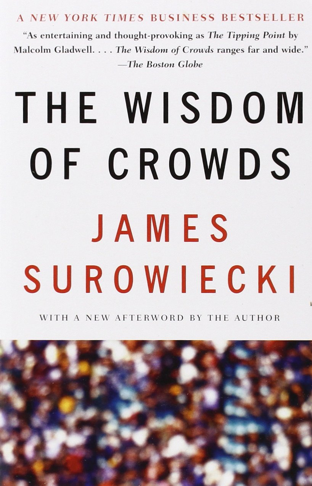
اول از همه من
این کتاب
رو نقد نمیکنم.
کتاب خوبی هست و ساروویکی هم مانند من قصد پاسخ دادن به همون سوال رو داره:
"چرا بعضی از جوامع رفتار خردمندانه یا جنونآمیز نشون میدن؟"
جواب ساروویکی اینه: جوامع زمانی تصمیمهای خوبی میگیرن که تمامی افراد تا حد ممکن مستقل باشن. اون داستان یک جشنواره محلی رو میگه، که اهالی محله دعوت شدن تا وزن یک گاو رو حدس بزنن. به طور شگفتانگیزی، میانگین تمام حدسهای زده شده دقیقتر از هرکدام از حدسها بود. ولی نکتهاش اینجاست: مردم باید به صورت مستقل از همدیگه حدس بزنن. در غیر این صورت حدس اونها متاثر از حدسهای نادرست قبلی شکل میگیره و میانگین جوابها ممکنه کمی بالا یا پایین بشه.
ولی... من فکر نمیکنم که "تمامی افراد تا حد ممکن مستقل باشن" جواب کاملی باشه. حتی نوابغ که ما اشتباها به عنوان بزرگترین متفکران مستقل میشناسیمشون عمیقا توسط دیگران تحت تاثیر قرار میگیرن. همانطور که سر آیزاک نیوتن گفت "اگر من فراتر از دیگران را دیدهام به دلیل آن است که بر شانههای غولها ایستادهام."
پس کدوم ایده درسته؟ آیا خرد از تفکر فردی سرچشمه میگیره یا تفکر جمعی؟ جواب "هر دو" هستش.
این چیزی هست که توی این تفسیر اکتشافی قصد دارم توضیح بدم: چطور حد مطلوب بین استقلال و وابستگی رو بدست بیاریم — یعنی چطور یک جمع خردمند داشته باشیم.
جواب ساروویکی اینه: جوامع زمانی تصمیمهای خوبی میگیرن که تمامی افراد تا حد ممکن مستقل باشن. اون داستان یک جشنواره محلی رو میگه، که اهالی محله دعوت شدن تا وزن یک گاو رو حدس بزنن. به طور شگفتانگیزی، میانگین تمام حدسهای زده شده دقیقتر از هرکدام از حدسها بود. ولی نکتهاش اینجاست: مردم باید به صورت مستقل از همدیگه حدس بزنن. در غیر این صورت حدس اونها متاثر از حدسهای نادرست قبلی شکل میگیره و میانگین جوابها ممکنه کمی بالا یا پایین بشه.
ولی... من فکر نمیکنم که "تمامی افراد تا حد ممکن مستقل باشن" جواب کاملی باشه. حتی نوابغ که ما اشتباها به عنوان بزرگترین متفکران مستقل میشناسیمشون عمیقا توسط دیگران تحت تاثیر قرار میگیرن. همانطور که سر آیزاک نیوتن گفت "اگر من فراتر از دیگران را دیدهام به دلیل آن است که بر شانههای غولها ایستادهام."
پس کدوم ایده درسته؟ آیا خرد از تفکر فردی سرچشمه میگیره یا تفکر جمعی؟ جواب "هر دو" هستش.
این چیزی هست که توی این تفسیر اکتشافی قصد دارم توضیح بدم: چطور حد مطلوب بین استقلال و وابستگی رو بدست بیاریم — یعنی چطور یک جمع خردمند داشته باشیم.
چه نوع ارتباطات دیگهای وجود داره؟
محض سادگی،
شبیهسازیهای من اینطور بود که افراد فقط از طریق روابط دوستانه ارتباط دارن
و تمام دوستیها یکسان هستن.
اما دانشمندان شبکه انواع دیگری که ما میتونیم
به هم متصل باشیم رو
در نظر میگیرن.
از جمله:
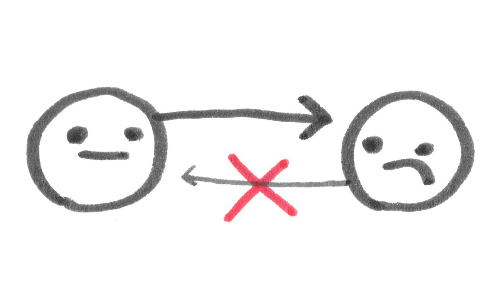 ارتباطات جهتدار
آلیس رئیس باب هست، اما باب رئیس آلیس نیست. کارول مادر دیوید هست، اما دیوید مادر کارول نیست. "رئیس" و "والدین" بودن روابط جهتدار هستن: رابطه فقط یک طرفه است. متضاد اون، "دوستی" یک رابطهی بدون جهت هست: رابطه دو طرفه است (البته، امیدوارم)
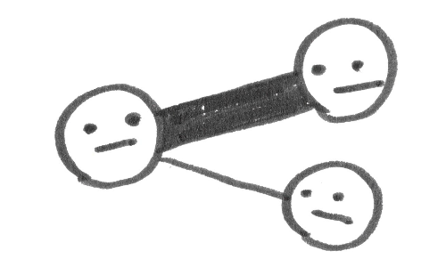 ارتباطات وزندار
الی و فرانکی با هم آشنا هستن. جرج و هری بهترین دوستای هم هستن. با اینکه در هر دو مورد یک رابطهی "دوستی" برقرار هست، دوستی مورد دوم قویتره. اینطور میگیم که این دو اتصال "وزن"های متفاوتی دارن.
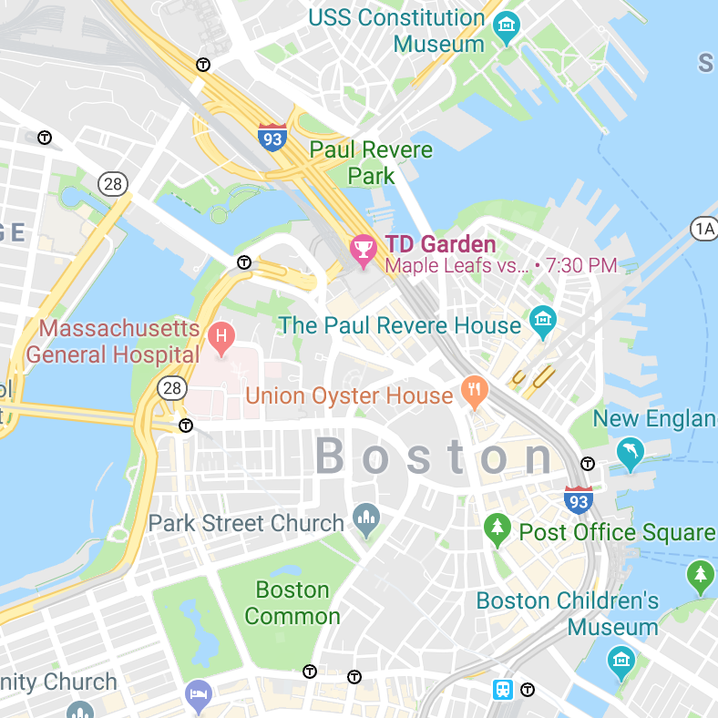 فقط یادتون باشه: تمامی این شبیهسازیها اشتباهن. همونطور که تمامی نقطهها "اشتباه" هستن. نقشهی سمت چپ رو میبینی؟ ساختمونها مربعهای خاکستری ساده نیستن! کلمات بالای شهرها معلق نیستن! با این حال نقشهها به خاطر همین سادگیشون به درد بخورن. شبیهسازیها و نظریههای علمی هم به همین صورتن. مسلما اونا اشتباه هستن — و همینه که اونا رو به درد بخور میکنه.
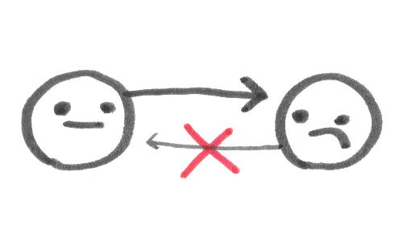 ارتباطات جهتدار
آلیس رئیس باب هست، اما باب رئیس آلیس نیست. کارول مادر دیوید هست، اما دیوید مادر کارول نیست. "رئیس" و "والدین" بودن روابط جهتدار هستن: رابطه فقط یک طرفه است. متضاد اون، "دوستی" یک رابطهی بدون جهت هست: رابطه دو طرفه است (البته، امیدوارم)
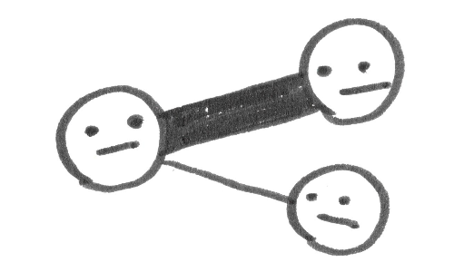 ارتباطات وزندار
الی و فرانکی با هم آشنا هستن. جرج و هری بهترین دوستای هم هستن. با اینکه در هر دو مورد یک رابطهی "دوستی" برقرار هست، دوستی مورد دوم قویتره. اینطور میگیم که این دو اتصال "وزن"های متفاوتی دارن.
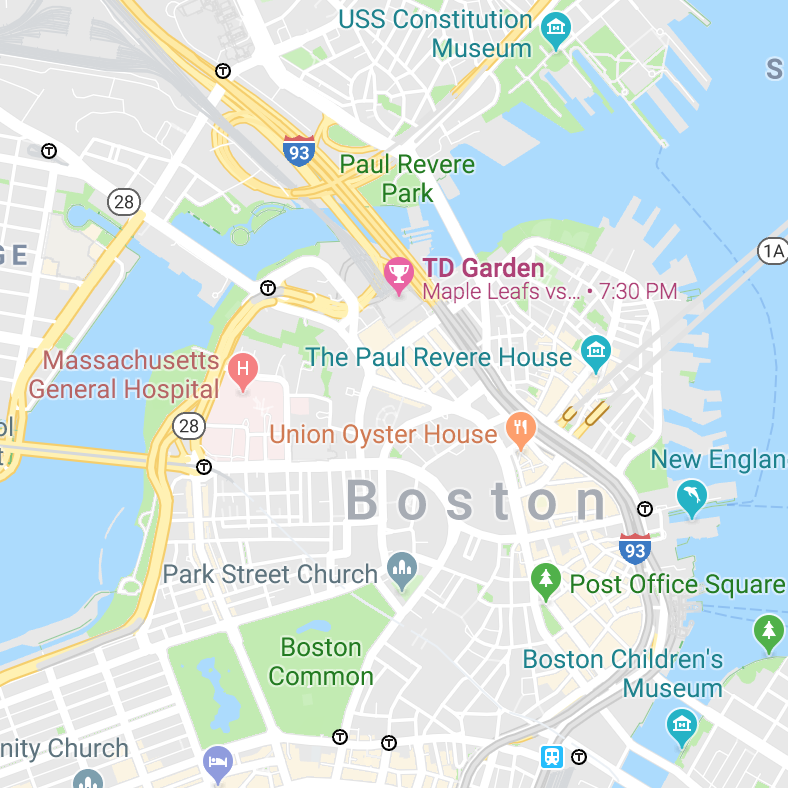 فقط یادتون باشه: تمامی این شبیهسازیها اشتباهن. همونطور که تمامی نقطهها "اشتباه" هستن. نقشهی سمت چپ رو میبینی؟ ساختمونها مربعهای خاکستری ساده نیستن! کلمات بالای شهرها معلق نیستن! با این حال نقشهها به خاطر همین سادگیشون به درد بخورن. شبیهسازیها و نظریههای علمی هم به همین صورتن. مسلما اونا اشتباه هستن — و همینه که اونا رو به درد بخور میکنه.
چه نوع سرایتهای دیگهای وجود داره؟
راههای بسیار بسیار زیادی وجود داره که دانشمندان شبکه میتونن سرایت رو شبیهسازی کنن.
من برای مقاصد آموزشی، سادهترین رو انتخاب کردم.
اما راههای دیگری هم هست:
 سرایتهای تصادفی
در معرض سرایت قرار گرفتن
لزوما
شما رو آلوده نمیکنه،
فقط احتمالش رو
بیشتر
میکنه.
سرایتهای تصادفی
در معرض سرایت قرار گرفتن
لزوما
شما رو آلوده نمیکنه،
فقط احتمالش رو
بیشتر
میکنه.
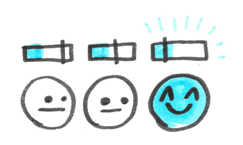 افراد آستانهی سرایت متفاوتی دارن. در شبیهسازیهای من آستانه برای تمامی افراد یکسان در نظر گرفته شده. برای مشروبخورها ۵۰%، برای داوطلبها ۲۵% و برای اطلاعات غلط ۰%. البته که در دنیای واقعی اینطوری نیست و میشه در شبیهسازی هم این رو در نظر گرفت.
 بومشناسی سرایت:
اگه
چندتا
سرایت با آستانههای مختلف وجود داشته باشه چی؟
برای مثال یک سرایت "جنون" ساده و یک سرایت "خرد" پیچیده داشته باشیم.
اگه کسی با جنون آلوده بشه، همچنان ممکنه با خرد هم آلوده بشه؟
یا بالعکس؟
یک نفر میتونه به هردوتا آلوده بشه؟
بومشناسی سرایت:
اگه
چندتا
سرایت با آستانههای مختلف وجود داشته باشه چی؟
برای مثال یک سرایت "جنون" ساده و یک سرایت "خرد" پیچیده داشته باشیم.
اگه کسی با جنون آلوده بشه، همچنان ممکنه با خرد هم آلوده بشه؟
یا بالعکس؟
یک نفر میتونه به هردوتا آلوده بشه؟
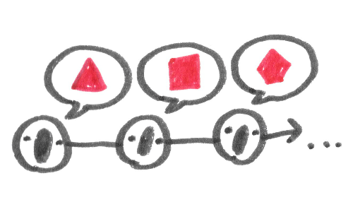 سرایتهایی که جهش و تکامل دارن ایدهها مثل ویروسها به صورت کامل و بینقض از افزاد به بقیه منتقل نمیشن. مثل داستان یک کلاغ چهل کلاغ، که داستان در هربار تکرار تغییر پیدا میکنه — و بعضی مواقع نسخهی تغییر یافته بیشتر از نسخهی اصلی پخش میشه. پس به مرور زمان ایدهها جوری تکامل پیدا میکنن که به یادماندنیتر، قابل تکرارتر و مسری تر بشن.
سرایتهای تصادفی
در معرض سرایت قرار گرفتن
لزوما
شما رو آلوده نمیکنه،
فقط احتمالش رو
بیشتر
میکنه.
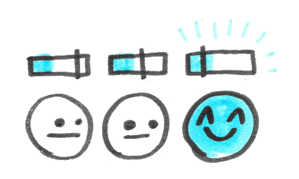 افراد آستانهی سرایت متفاوتی دارن. در شبیهسازیهای من آستانه برای تمامی افراد یکسان در نظر گرفته شده. برای مشروبخورها ۵۰%، برای داوطلبها ۲۵% و برای اطلاعات غلط ۰%. البته که در دنیای واقعی اینطوری نیست و میشه در شبیهسازی هم این رو در نظر گرفت.
بومشناسی سرایت:
اگه
چندتا
سرایت با آستانههای مختلف وجود داشته باشه چی؟
برای مثال یک سرایت "جنون" ساده و یک سرایت "خرد" پیچیده داشته باشیم.
اگه کسی با جنون آلوده بشه، همچنان ممکنه با خرد هم آلوده بشه؟
یا بالعکس؟
یک نفر میتونه به هردوتا آلوده بشه؟
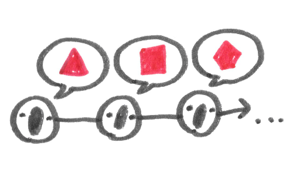 سرایتهایی که جهش و تکامل دارن ایدهها مثل ویروسها به صورت کامل و بینقض از افزاد به بقیه منتقل نمیشن. مثل داستان یک کلاغ چهل کلاغ، که داستان در هربار تکرار تغییر پیدا میکنه — و بعضی مواقع نسخهی تغییر یافته بیشتر از نسخهی اصلی پخش میشه. پس به مرور زمان ایدهها جوری تکامل پیدا میکنن که به یادماندنیتر، قابل تکرارتر و مسری تر بشن.
میخوام بیشتر یاد بگیرم! چه چیز بیشتری میتونم بخونم و/یا بازی کنم؟
این "تفسیر اکتشافی" فقط یک سکوی پرتاب برای کنجکاوی شما بود،
تا بتونید شیرجهی عمیقی در دریای پهناور دانش بزنید!
اینم از منابع مختلفی در مورد شبکهها و سیستمهای اجتماعی:
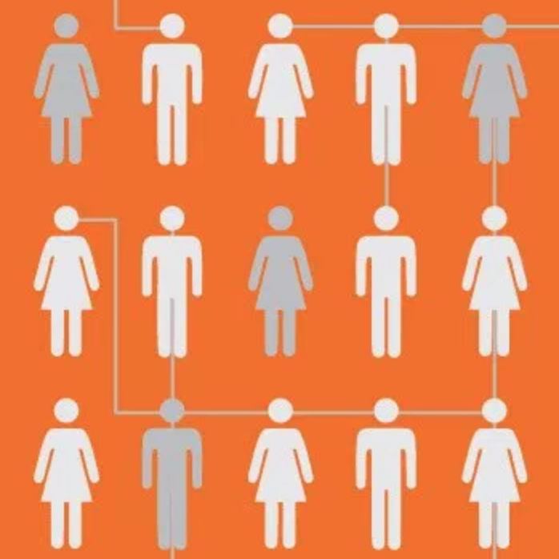 كتاب: "Connected" اثر Nicholas Christakis و James Fowler (۲۰۰۹). یک تور در مورد چگونگی اثرگذاری شبکهها بر زندگی ما، چه خوب و چه بد. گلچینی از کتاب: Preface & Chapter 1 (English)
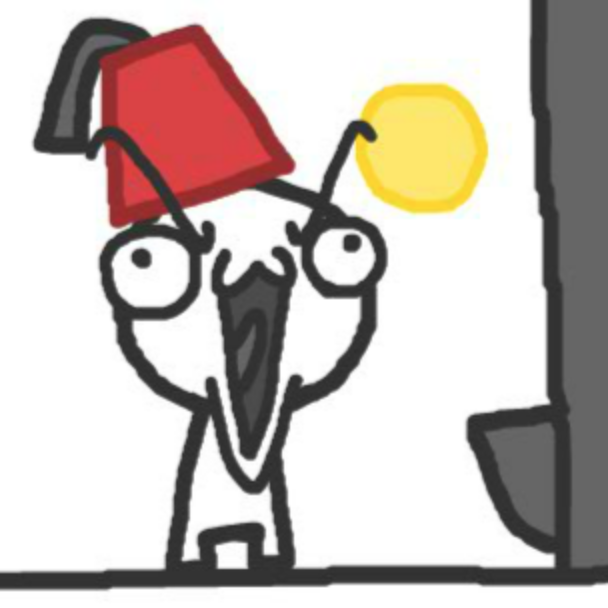 تعاملی: "تکامل اعتماد" The Evolution of Trust اثر Nicky Case (۲۰۱۷). بازیای در مورد نظریهی بازی و چگونگی ساخته شدن و از بین رفتن تعاون اجتماعی.
(دارای ترجمهی فارسی)
 تعاملی:
"حکایت چندضلعیها"
Parable of the Polygons
اثر
Vi Hart
و
Nicky Case (۲۰۱۴).
داستانی درمورد اینکه چطور انتخابهای بدون خطر میتونن دنیای خطرناکی رو بسازن.
تعاملی:
"حکایت چندضلعیها"
Parable of the Polygons
اثر
Vi Hart
و
Nicky Case (۲۰۱۴).
داستانی درمورد اینکه چطور انتخابهای بدون خطر میتونن دنیای خطرناکی رو بسازن.
 یا اگه دوست داری گالری تمامی این چیزای تعاملی رو ببینی:
"تفاسیر اکتشافی"
Explorable Explanations
مرکز یادگیری از طریق بازی!
یا اگه دوست داری گالری تمامی این چیزای تعاملی رو ببینی:
"تفاسیر اکتشافی"
Explorable Explanations
مرکز یادگیری از طریق بازی!
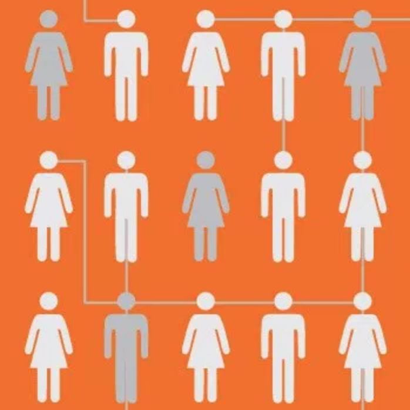 كتاب: "Connected" اثر Nicholas Christakis و James Fowler (۲۰۰۹). یک تور در مورد چگونگی اثرگذاری شبکهها بر زندگی ما، چه خوب و چه بد. گلچینی از کتاب: Preface & Chapter 1 (English)
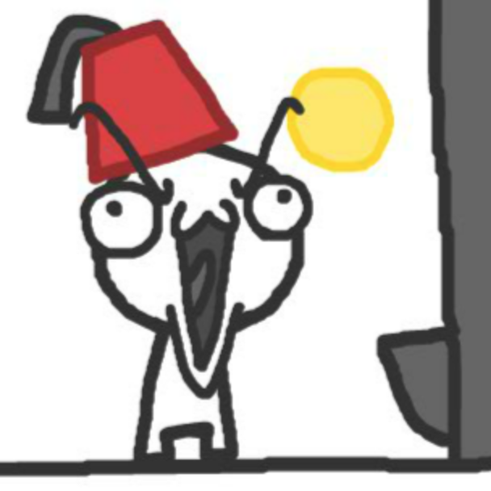 تعاملی: "تکامل اعتماد" The Evolution of Trust اثر Nicky Case (۲۰۱۷). بازیای در مورد نظریهی بازی و چگونگی ساخته شدن و از بین رفتن تعاون اجتماعی.
(دارای ترجمهی فارسی)
تعاملی:
"حکایت چندضلعیها"
Parable of the Polygons
اثر
Vi Hart
و
Nicky Case (۲۰۱۴).
داستانی درمورد اینکه چطور انتخابهای بدون خطر میتونن دنیای خطرناکی رو بسازن.
یا اگه دوست داری گالری تمامی این چیزای تعاملی رو ببینی:
"تفاسیر اکتشافی"
Explorable Explanations
مرکز یادگیری از طریق بازی!
"تقریبا تمام دانشجوها عنوان کردن که دوستاشون بیشتر از خودشون مشروب خوردن."
"مشاهدهی جانبدارانه از مصرف مشروب در بین دانشجویان دانشگاه"
اثر
Baer
و همکاران
(۱۹۹۱)
"توهم اکثریت"
"شواهد آماری محکم در مورد اینکه استعمال دخانیات، سلامتی، خوشحالی، الگوهای رای دادن و سطوح همکاری همگی مسری هستند"
از کتاب شیوا و قابل دسترس
"Connected"
اثر
Nicholas Christakis
و
James Fowler
سال ۲۰۰۹.
"شواهدی که خودکشیها نیز مسری هستند"
"سرایت و گزارش خودکشی: توصیههایی از یک کارگاه ملی"
اثر
O'Carroll
و همکاران
(۱۹۹۴)،
مورد تحسین مراکز کنترل و جلوگیری از بیماریها.
"شواهدی که تیراندازیهای کور نیز مسری هستند"
"سرایت تیراندازی کور و تیراندازی در مدارس"
اثر
Towers
و همکاران
(۲۰۱۵).
همچنین ببینید: پویش اسمشون رو نبر Don't Name Them که الزام میکنه که در رسانههای خبری اسامی، بیانیه و صفحات اجتماعی قاتلین دستهجمعی اعلام نشن. اینکار سبب افزایش سرایت میشه. به جای اون، رسانهها باید بر روی قربانیان، امدادگران، قهرمانان مدنی و جامعهی عزادار و در حال ترمیم تمرکز کنن.
همچنین ببینید: پویش اسمشون رو نبر Don't Name Them که الزام میکنه که در رسانههای خبری اسامی، بیانیه و صفحات اجتماعی قاتلین دستهجمعی اعلام نشن. اینکار سبب افزایش سرایت میشه. به جای اون، رسانهها باید بر روی قربانیان، امدادگران، قهرمانان مدنی و جامعهی عزادار و در حال ترمیم تمرکز کنن.
"موسسات مالی جهانی هم در سال ۲۰۰۸ دچار همچنین آبشار اطلاعاتیای شدند."
"موشهای وال استریت"
Lemmings of Wall Street
اثر
Cass Sunstein
یک مقالهی کوتاه و غیرفنی.
منتشر شده در اکتبر ۲۰۰۸، دقیقا پس از رکود.
"نظریهی سرایتهای پیچیده"
"مدلهای آستانهای برای رفتار جمعی"
اثر Granovetter
سال
۱۹۷۸،
تا جایی که میدونم اولین بار در این کتاب مدل "سرایت پیچیده" مطرح شد.
(هرچند که دقیقا از این عبارت استفاده نشد)
"شواهد مدلهای سرایت پیچیده در سرایتهای اجتماعی طبق دادههای مشاهدهای" اثر Sprague و House (۲۰۱۷) که به صورت تجربی نشون داد سرایتهای پیچیده واقعا وجود دارن. (حداقل در دادههای شبکههای اجتماعی مورد بررسی اونا)
و در نهایت، "رفتار جهانی در مدل عمومی سرایت" اثر Dodds و Watts (۲۰۰۴). یک مدل جامع از تمام سرایتها رو معرفی میکنه: ساده و پیچیده، بیولوژیکی و اجتماعی!
"شواهد مدلهای سرایت پیچیده در سرایتهای اجتماعی طبق دادههای مشاهدهای" اثر Sprague و House (۲۰۱۷) که به صورت تجربی نشون داد سرایتهای پیچیده واقعا وجود دارن. (حداقل در دادههای شبکههای اجتماعی مورد بررسی اونا)
و در نهایت، "رفتار جهانی در مدل عمومی سرایت" اثر Dodds و Watts (۲۰۰۴). یک مدل جامع از تمام سرایتها رو معرفی میکنه: ساده و پیچیده، بیولوژیکی و اجتماعی!
"۹۰% شکار بر عهدهی شیر ماده هستش."
شیرهای ماده شکارچیان اصلی گروه هستند.
آنها به صورت گروهی عمل میکنند و طعمههای مختلف را شکار میکنند.
"تفکر گروهی"
این عبارت الهام گرفته از اورول (Orwell) توسط Irving L. Janis در سال
۱۹۷۱
پایهگذاری شد.
Janis در مقالهی اصلیش
به بررسی موارد تفکر گروهی، لیستی از دلایل و (خداروشکر) درمانهای ممکن پرداخت.
"سرمایهی اجتماعی پیوند و اتصال"
این دو نوع سرمایه اجتماعی
—
"پیوند"
و
"اتصال"
—
توسط
Robert Putnam
در کتاب آیندهنگرانهاش
"بولینگ تنها"
(۲۰۰۰) نامگذاری شد.
کشفیات او:
تقریبا بین
تمامی
اندازههای تجربی برای اتصال اجتماعی،
آمریکاییها از همه بیشتر تنها هستن.
"سرمایهی اجتماعی اتصالی یه حد مطلوب داره"
"قدرت وابستگیهای ضعیف" اثر Granovetter
(۱۹۷۳)
نشون داد که ارتباطات بین گروهها کمک میکنه تا سرایت ساده منتقل بشه (مثل اطلاعات)،
اما
"سرایت پیچیده و ضعف وابستگیهای دور"
اثر Centola
و
Macy (۲۰۰۷)
نشون داد که ارتباطات بین گروهها احتمالا به سرایتهای پیچیده کمکی نمیکنه،
و در واقع میتونه جلوی پخش شدنشون رو بگیره!
"شبکهی دنیای کوچک"
ایدهی "دنیای کوچک"
توسط
آزمایش
Travers
و
Milgram
در سال
۱۹۶۹ مورد توجه قرار گرفت،
که نشون داد هر دو آدم تصادفی در ایالات متحده
تنها به طور متوسط با شش ارتباط از هم فاصله دارن
—
"فاصلهی درجه شش"!
شبکهی دنیای کوچک با تحقیق "دینامیک جمعی شبکههای دنیای کوچک" توسط Watts و Strogatz (۱۹۹۸) بار ریاضیاتی بیشتری به خودش گرفت. این تحقیق یک الگوریتم برای ساخت شبکههایی هم با فاصلهی مسیر متوسط کوتاه (فاصلهی درجه پایین) و هم با خوشههای متراکم (دوستانی که دوستان مشترک زیادی دارن) پیشنهاد کرد. — این شبکهی مطلوب ماست!
همچنین میتونی با اقتباس بصری و تعاملی این مقاله ساختهی Bret Victor (۲۰۱۱) بازی کنی.
شبکهی دنیای کوچک با تحقیق "دینامیک جمعی شبکههای دنیای کوچک" توسط Watts و Strogatz (۱۹۹۸) بار ریاضیاتی بیشتری به خودش گرفت. این تحقیق یک الگوریتم برای ساخت شبکههایی هم با فاصلهی مسیر متوسط کوتاه (فاصلهی درجه پایین) و هم با خوشههای متراکم (دوستانی که دوستان مشترک زیادی دارن) پیشنهاد کرد. — این شبکهی مطلوب ماست!
همچنین میتونی با اقتباس بصری و تعاملی این مقاله ساختهی Bret Victor (۲۰۱۱) بازی کنی.
"[شبکههای دنیای کوچک] چگونگی ارتباطات نورونهای مغز ما رو توصیف میکنه"
"شبکههای مغزی دنیای کوچک"
اثر
Bassett
و
Bullmore
(۲۰۰۶).
"[شبکههای دنیای کوچک] مسبب خلاقیت جمعی هستن"
"همکاری و خلاقیت: مسئلهی دنیای کوچک"
توسط
Uzzi
و
Spiro
(۲۰۰۵).
این مقاله شبکهی اجتماعی نمایش
Broadway
در طول زمان را تحلیل کرد و معلوم شد که بله، شبکهای بیشترین خلاقیت رو داره که
شبکهی "دنیای کوچک" باشه!
"[شبکههای دنیای کوچک] مسبب حل مسئلهی جمعی"
برای یک رویکرد داده-محور برای هوش جمعی به
"فیزیک اجتماعی"
توسط پروفسور
Alex "Sandy" Pentland
در دانشگاه
MIT
(۲۰۱۴)
رجوع کنید.
"[شبکههای دنیای کوچک] به جان اف. کندی کمک کرد تا (یه جورایی) جلوی جنگ هستهای رو بگیره!"
علاوه بر انفجار چلنجر ناسا، بزرگترین مثال بارز تفکرگروهی
"فاجعهی خلیج خوکها"
هستش.
در سال ۱۹۶۱
رئیسجمهور ایالات متحده، جان اف. کندی و تیم مشاورهی او
—
به دلایلی
—
فکر کردن فکر خوبیه که پنهانی به کوبا حمله کنن
و فیدل کاسترو رو برکنار کنن.
شکست خوردن.
در واقع از شکست هم بدتر بود:
اینکار منجر به بحران موشکی کوبا در سال ۱۹۶۲،
که نزدیکترین شرایط تاریخ بشر به جنگ جهانی هستهای بود
شد.
آره، جان اف. کندی این یکی رو گند زد.
اما کندی چندتا درس مهم از فاجعهی خلیج خوکها گرفت که بهش کمک کرد تا تیمش رو از تفکرگروهی دور نگه داره. میشه به موارد زیر اشاره کرد: ۱- کندی به صورت فعالانه مردم رو تشویق به بیان انتقاد میکرد، در نتیجه آستانهی سرایت رو برای ایدههای جایگزین پایین آورد. ۲- او قبل از جلسات، تیمش رو به چند زیرگروه تقسیم کرد که باعث ایجاد یک طراحی مشابه "شبکهی دنیای کوچک" در گروهش میشد. همهی اینا با هم منجر به یک تنوع سالمی از عقاید اما بدون شکاف بزرگ میشد — خرد جمعی.
و در نتیجه با همون افراد که برای خلیج خوکها تصمیم گرفته بودن اما با چیدمان جمعی برای بحران موشکی کوبا تصمیم گرفتن... تیم کندی موفق به دستیابی به یک توافق صلحآمیز با رهبر شوروی، نیکیتا کروشچف، شد. شوروی موشکهای خودش رو از کوبا خارج کرد و در عوض ایالات متحده قول داد تا دوباره به کوبا حمله نکنه. (همچنین در پشت پرده توافق کردن که ایالات متحده موشکهاشو از ترکیه خارج کنه)
و این داستان تقریبا نابودی کل بشر بود. اما شبکهی دنیای کوچک به کمکمون اومد! یه جورایی.
میتونی در این مورد در مجلهی Harvard Business Review، یا در مقالهی اصلی تفکرگروهی بیشتر بخونی.
آره، جان اف. کندی این یکی رو گند زد.
اما کندی چندتا درس مهم از فاجعهی خلیج خوکها گرفت که بهش کمک کرد تا تیمش رو از تفکرگروهی دور نگه داره. میشه به موارد زیر اشاره کرد: ۱- کندی به صورت فعالانه مردم رو تشویق به بیان انتقاد میکرد، در نتیجه آستانهی سرایت رو برای ایدههای جایگزین پایین آورد. ۲- او قبل از جلسات، تیمش رو به چند زیرگروه تقسیم کرد که باعث ایجاد یک طراحی مشابه "شبکهی دنیای کوچک" در گروهش میشد. همهی اینا با هم منجر به یک تنوع سالمی از عقاید اما بدون شکاف بزرگ میشد — خرد جمعی.
و در نتیجه با همون افراد که برای خلیج خوکها تصمیم گرفته بودن اما با چیدمان جمعی برای بحران موشکی کوبا تصمیم گرفتن... تیم کندی موفق به دستیابی به یک توافق صلحآمیز با رهبر شوروی، نیکیتا کروشچف، شد. شوروی موشکهای خودش رو از کوبا خارج کرد و در عوض ایالات متحده قول داد تا دوباره به کوبا حمله نکنه. (همچنین در پشت پرده توافق کردن که ایالات متحده موشکهاشو از ترکیه خارج کنه)
و این داستان تقریبا نابودی کل بشر بود. اما شبکهی دنیای کوچک به کمکمون اومد! یه جورایی.
میتونی در این مورد در مجلهی Harvard Business Review، یا در مقالهی اصلی تفکرگروهی بیشتر بخونی.
"ما بر روی [...] دوستان دوستان دوستانمان تاثیر میگذاریم!"
مجدد، از کتاب
"متصل"
Connected
از
Nicholas Christakis
و
James Fowler
سال ۲۰۰۹.
"به ایدههایی که بهت حس خوبی میدن شک کن"
بله، شامل ایدههای
این
تفسیر اکتشافی هم میشه.
★ فضای تمرینی ★
میانبرهای صفحهکلید
(1, 2, space, backspace)
در
تمامی
معماها کار میکنن و فقط مختص به فضای تمرینی نیستن!
جدی میگم، میتونی به بخشهای مختلف برگردی و
شبیهسازیها رو ویراش کنی.
در حقیقت،
منم
همینطوری همهی معماها رو ساختم. خوش بگذره!
حامیان عزیز
Patreon:
بخشندگی شما
به معنای واقعی کلمه
پول غذا و اجارهی منو میده.
شما به من آزادی میدین تا این بازیهای آموزشی عجیب رو درست کنم،
پس از صمیم قلبم میگم
ممنونم. 3>
مرسی از تمام کسایی که
جنون/خرد جمعی
رو در مراحل مختلف بازی و امتحان کردن!
The Prototype:
Maria · Monica Srivastava
The Alpha:
Glen Chiacchieri · Kalli Repzeti · Mali Akmanalp · Toph Tucker
The Beta:
Alex Dytrych · Amit Patel · Cassandra McClure · Catherine Ray · Josh Comeau · Kayle Sawyer · Matthew Conlen · Srini Kadamati · Vanessa Shen · Wick Perry
The Prototype:
Maria · Monica Srivastava
The Alpha:
Glen Chiacchieri · Kalli Repzeti · Mali Akmanalp · Toph Tucker
The Beta:
Alex Dytrych · Amit Patel · Cassandra McClure · Catherine Ray · Josh Comeau · Kayle Sawyer · Matthew Conlen · Srini Kadamati · Vanessa Shen · Wick Perry